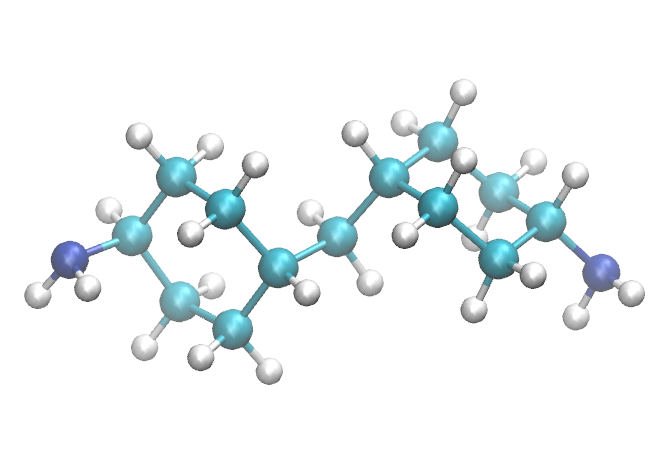

Molecular Structure Inputs¶
HTPolyNet uses the distinct terms “monomer” and “molecule”. A monomer is akin to a “residue” for biomolecules; it has a unique name, and a “molecule” is made of a sequence of one or more monomers. (Here, “sequence” only refers to the order in which monomers appear in the list of all atoms; not their topological sequence.) HTPolyNet will build a system out of molecules you specify as input; typically, these would be monomers (i.e., molecules with a single monomer).
Regardless, any molecule you wish to use as a monomer must have a mol2 file <NAME>.mol2, where <NAME> is replaced with the name of the monomer. This name is important; it is how the monomer is called forever inside HTPolyNet.
Sample mol2 files for a few monomers are provide in the Library subpackage: Library/molecules/inputs. You will likely want to create your own. Most chemical structure drawing programs will output mol2 files. OpenBabel can also generate them from SMILES strings. As an example, consider 4,4-diaminodicyclohexylmethane, referred to colloquially as PACM (“pack-em”). The SMILES string for PACM is C1CC(CCC1CC2CCC(CC2)N)N, and using obabel, we can generate a structure for the “PAC” monomer (three-letter monomer names are customary, though not required; they need only be unique identifiers):
$ echo "C1CC(CCC1CC2CCC(CC2)N)N" | obabel -ismi -h --gen3d -omol2 --title "PAC" | sed s/"UNL1 "/"PAC "/ > PAC.mol2
The mol2 format HTPolyNet requires for a monomer is minimal and requires only three sections: @<TRIPOS>MOLECULE, @<TRIPOS>ATOM and @<TRIPOS>BOND. No matter how you generate a mol2 file, if it corresponds to a molecule that can react, you must edit the mol2 file to give unique atom names to any reactive atoms or chiral carbons. You will then use those unique names to refer specifically to those atoms.
Here is the 3d structure of PACM the above command generated:
